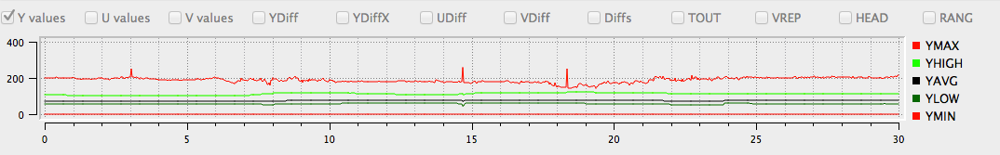

YUV refers to a particular a way of encoding color information in analog video where Y channels carry luma
, or brightness information, and U and V channels carry information about color, or chrominance
.
QC Tools can analyze the YUV Values of a particular encoded video file in order to provide information about the appearance of the video. These filters examine every pixel in a given channel and records the Maximum, Minimum, and then adds up and divides by the total number of pixels to calculate and provide the Average value.
| Filter Domain | Filter Name(s) | Range (in pixels*) |
|---|---|---|
| Y Channel | YMIN, YAVG, YMAX | 0-255 |
*Appropriate for the 8-bit video samples analyzed by this tool.
Y Channels carry data about the brightness of a picture. Problematic variance in Y Channel values will manifest as a picture that is either too light or too dark, also known as containing luma noise. 8-bit video will have values falling in the range of 0-255 pixels. A picture with well-balanced light levels will have an average, or mid-range Y Channel value of around 128 (YAVG). Graph readings outside of that range will indicate a picture that is either too bright or too dark. A Y Value of 0 would indicate total blackness and a value of 255 would present as entirely white. Except during particular moments like scene changes where one might expect abrupt spikes, the average values of Y channels should remain relatively stable or constant with little variation. Portions of video showing extreme changes in average values (and not corresponding to a scene change or otherwise dramatic edit) likely indicate a picture error.
Y values = Combined graph of YMAX, YHIGH, YAVG, YLOW, and YMIN.
YMIN = Y channel minimum
YLOW = Y channel 10th percentile
YAVG = Y channel average
YHIGH = Y channel 95th percentile
YMAX = Y channel maximum
In the graph below, you can see the YMAX spikes which would manifest as white lines across the video picture:
| Filter Domain | Filter Name(s) | Range(in pixels) |
|---|---|---|
| U Channel | UMIN, UAVG, UMAX | 0-255 |
| V Channel | VMIN, VAVG, VMAX | 0-255 |
The U and V Channels represent the chrominance, or color differences of a picture. U and V filters act to detect color abnormalities in video. It can be difficult to derive meaning from U or V values on their own, but they provide supplementary information and can be good indicators of artifacts, especially when occurring in tandem with similar Y Value readings. Black and white videos should present flat-lines (or no data) for UV channels. Activity in UV Channels for black and white video content, however, would certainly be an indication of chrominance noise. Alternatively, a color video which shows flat-lines for these channels would be an indicator of a color drop-out scenario.
U values, V values = Combined graph of UMIN, ULOW, UAVG, UHIGH, and UMAX, Combined graph of VMIN, VLOW, VAVG, VHIGH, VMAX
UMIN, VMIN = U channel minimum, V channel minimum
ULOW, VLOW = U channel 10th percentile, V channel 10th percentile
UAVG, VAVG = U channel average, V channel average
UHIGH, VHIGH = U channel 95th percentile, V channel 95th percentile
UMAX, VMAX = U channel maximum, V channel maximum

| Filter Domain | Filter Name(s) | Range (in pixels*) |
|---|---|---|
| Y Channel | YLOW, YHIGH | 16-235 |
| U Channel | ULOW, UHIGH | 16-235 |
| V Channel | VLOW, VHIGH | 16-235 |
This filter works in a similar fashion as the YUV *MIN and *MAX filters, but instead of looking at the absolute minimum and maximum value for these channels, it looks at the 10th percentile (LOW, or 16 pixels) and 95th percentile (HIGH, or 235 pixels) which present the outside limits of the legal broadcast range. An extreme minimum or maximum value could dramatically skew the graph but because they may be outside the viewable broadcast image, they may not necessarily be meaningful indicators of a problematic visual image. For that reason, it is useful to screen for the low/high values within broadcast range.
| Filter Domain | Filter Name(s) | Range (in pixels) |
|---|---|---|
| Y Channel | YDIF | 0-84 |
| Y Channel | YDIF1 | 0-84 |
| Y Channel | YDIF2 | 0-84 |
| U Channel | UDIF | 0-61 |
| V Channel | VDIF | 0-18 |
This QC Tools filter selects two successive frames of video and subtracts the values of one from the other in order to find the change, or difference, between the two frames (measured in pixels). This information is meaningful in that it indicates the rapidity with which a video picture is changing from one frame to the next. Aside from scene-change scenarios, a video picture should not undergo dramatic changes in these values unless an artifact is present. A scene-change would present as a short but dramatic spike in the graph, and that is normal. Other YUV Difference spikes may be present in cases where picture problems are visible. Often, head problems with corrupted frames will result in large YUV Difference values/graph spikes.
The YDIF1 and YDIF2 filters help detect artifacts caused by video deck head clogs, with each filter providing a reading per head. The filter is built on the assumption that one head is functioning (and as such, presents as a stable graph line), and one is corrupt (presenting as a variable line with spikes and troughs). A user, in reading the two results against one another, would see the areas where the two readings diverge as red portions on the graph. See graph below: between 17-19s the YDIF1 and YDIF2 readings vary dramatically, presenting as red portions in the graph.
YDIF = Difference of Y Channel between two frames
UDIF = Difference of U Channel between two frames
VDIF = Difference of V Channel between two frames
YDIF1 = YDIF of video deck head 1
YDIF2 = YDIF of video deck head 2
| Filter Domain | Filter Name(s) | Range |
|---|---|---|
| Temporal Outliers | TOUT | 0.00-0.09 |
This filter was created to detect white speckle noise in analog VHS and 8mm video. It works by analyzing the current pixel against the two above and below and calculates an average value. In cases where the filter detects a pixel value which is dramatically outside of this established average, the graph will show small spikes, or blips, which correspond to white speckling in the video. The range of 0.00-0.09 is considered normal, and anything above that range is a questionable quality issue.
TOUT = Temporal Outliers
| Filter Domain | Filter Name(s) | Range |
|---|---|---|
| Head Switching | HEAD | 0.00-0.79 |
Head switching noise is visible on the bottom lines of a video display. A good range would be between 0.00-0.01, indicating that there is very little issues with head switching. Furthermore, the HEAD graph should remain consistent without significant spikes or dips. Visible and notable head switching noise will be in the 0.01-0.80 range.
HEAD = Head Switching Noise
| Filter Domain | Filter Name(s) | Range |
|---|---|---|
| Vertical Line Repetitions | VREP | 0.00-0.92 |
Vertical Line Repetitions, or the VREP filter, is useful in analyzing pneumatic tapes (such as U-Matic) and detecting artifacts generated in the course of the digitization process. Specifically, VREP detects the repetition of lines in a video. The filter works by taking a given video line and comparing it against a video line that occurs 4 pixels earlier. If the difference in the two is less than 512, the filter reads them as being close enough to be deemed repetitious. Note that the VREP filter is still under development.
VREP = Vertical Line Repetitions
| Filter Domain | Filter Name(s) | Range |
|---|---|---|
| Broadcast Range | BRNG | 0.00-0.79 |
The BRNG filter is one that identifies the number of pixels which fall outside the standard video broadcast range of 16-235 pixels. Normal, noise-free video would not trigger this filer, but noise occurring outside of these parameters would read as spikes in the graph. Typically sudden spikes of anything with a value over 0.01 will read as an artifact such as a dropout which would contain random luminosity values which would thus often fall outside of broadcast range. While the BRNG filter is good at detecting the general presence of noise, it can be a bit non-specific in its identification of the causes.
BRNG = Broadcast Range